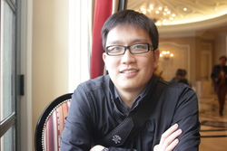

|  | Eric Chu |
Packard 243, Stanford, CA 94305
(650) 723-9833
echu508@stanford.edu
Domain specific languages
Large scale convex optimization and applications
Smart grid
Robotics
Image processing and computer vision
Google Scholar has a selection of paper I've written, including some hilarious paper I wrote freshman year of college.
Some more recent work:
Code Generation for Embeddeded Second-Order Cone Programming. E. Chu, N.Parikh, A. Domahidi, and S. Boyd. Proceedings of ECC 2013. Jul, 2013.
ECOS: An SOCP Solver for Embedded Systems. A. Domahidi, E. Chu, and S. Boyd. Proceedings of ECC 2013. Jul, 2013.
Message Passing for Dynamic Network Energy Management. M. Kraning, E. Chu, J. Lavaei, and S. Boyd. In submission.
Distributed Optimization and Statistical Learning via the Alternating Direction Method of Multipliers. S. Boyd, N. Parikh, E. Chu, B. Peleato, and J.Eckstein. Foundations and Trends in Machine Learning. Michael Jordan, Editor in Chief. 3(1):1-122, 2011.
Using Near-Field Stereo for Robotic Grasping in Cluttered Environments. A.Leeper, K. Hsiao, E. Chu, and K. Salisbury. Proceedings of ISER 2010. Dec, 2010.
Detecting Aircraft Performance Anomalies from Cruise Flight Data. E. Chu, D. Gorinevsky, and S. Boyd. Proceedings AIAA@Aerospace. April, 2010.
Jack L. Skinner, Harvey Ho, Eric Chu. Passive Hybrid Sensing Tag with Flexible Substrate Saw Device. US Patent 12/777,355, filed May 11, 2010.
Teaching assistant at Stanford University for:
MS, Electrical Engineering, Stanford University, June 2007
BS, Electrical Engineering with Distinction, Stanford University, June 2006
2010 Pan Wen-Yuan Scholarship Foundation recipient
2009 National Science Foundation Honorable Mention